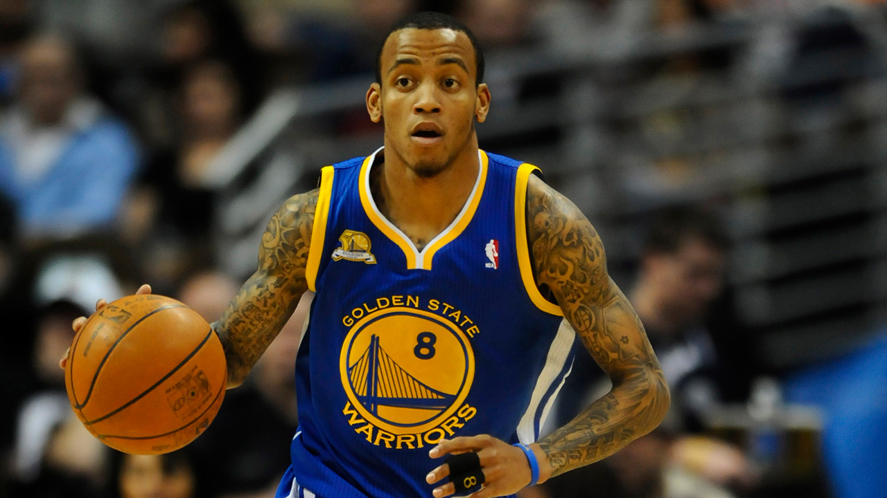

Hey everyone! My name is Camden Nelson. I was born in California and grew up pretending I was Spider-Man and idolizing every player on the Golden State Warriors. After some time in California, I reluctantly moved across the country to a small town in Connecticut. While I missed California and watching my favorite basketball team, I quickly came to love the East Coast. I played high school basketball, had a favorite deli, and took countless weekend trips to NYC. In fact, living 45-minutes away from one of the financial capitals of the world was the catalyst for my goal of working on Wall Street. Since starting at BYU, I’ve majored in finance and completed various internships in hopes of landing an investment banking job upon graduation.
Outside of work and school, I love taking intramural basketball too seriously, watching Breaking Bad and Better Call Saul, and listening to Radiohead with my girlfriend. And since moving to Utah, my weekend trips to NYC have been replaced with ski trips to what I think are the best mountains in the world. I skied over 200,000 vertical feet in 2022 and still feel like I didn’t go nearly as much as I should’ve.
When I’m not in Utah, I’m usually back in Connecticut visiting my family. I have two brothers, Parker and Hunter, and we take frequent trips to 7-11 when I’m home. My older brother, Parker, has severe autism and constantly reminds me that I should pursue a life beyond what is normal.
Bob Odenkirk, my favorite actor in my favorite show, Better Call Saul
Eight-year-old me's favorite player, Monta Ellis (2008)

Picture of me and my girlfriend, Morgan
Video of professional skier, Candide Thovex